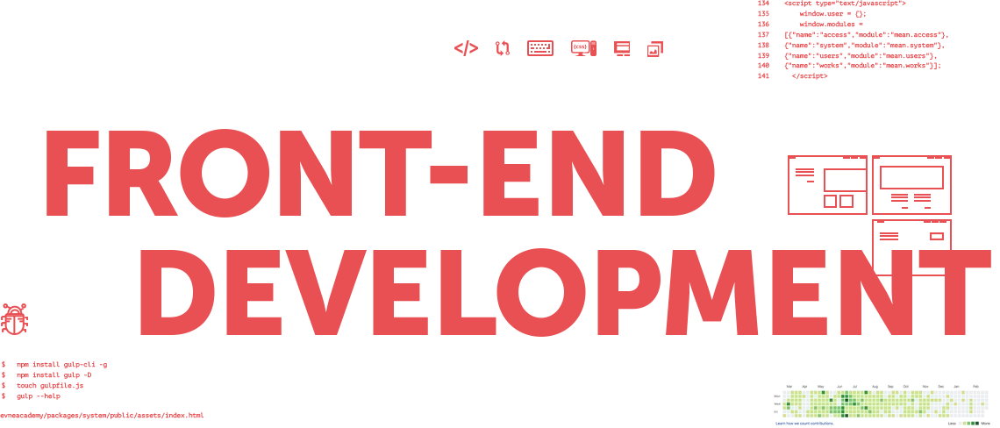

OBJECTIVE:
Highly skilled and motivated IT professional seeking for a challenging role of a Front-End developer.SUMMARY:
Front-End Developer with expertise in all aspects of the software development life cycle, including requirements analysis, design, development and production support. Self-motivated, enthusiastic, analytical and creative agile developer.SKILLS:
Programming Languages:JavaScript, HTML, CSS (Cascading Style Sheets). Frameworks: React.JS; Bootstrap..NET Skills:
.NET framework, ASP .NET MVC 5, Windows Forms.Softwares:
Sublime Text, Atom, Git, Wordpress, Visual Studio.EXPERIENCE:
No experience.EDUCATION and TRAINING:
IT Academy KARAKOL, Kyrgyzstan. www.it-academy.kg Certificate of successful completion. KSSDA (Kyrgyz software and services developer's association), Bishkek, July 2019. www.kssda.kg October 2018-July 2019 (9 month).LANGUAGE SKILLS:
English: fluent both oral and written. Kyrgyz: native. Russian: good.